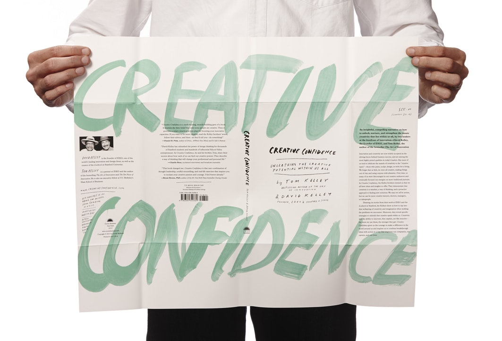
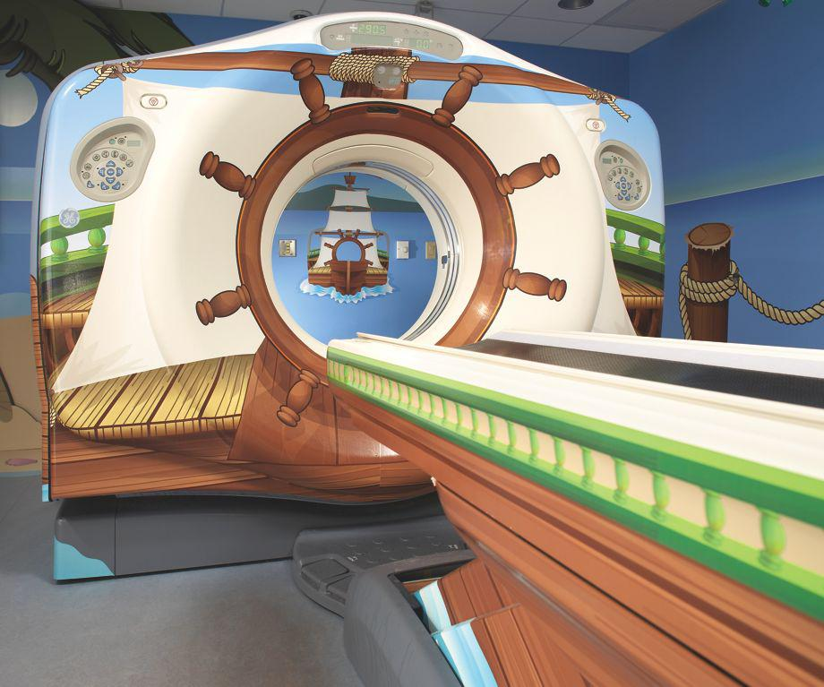
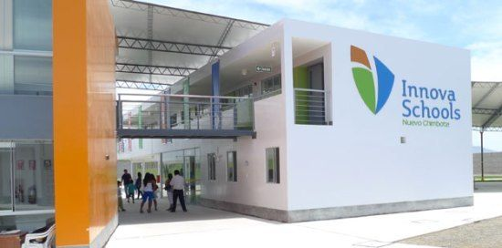

Throughout this essay I’m going to be talking about IDEO and how they have helped people learn that being creative isn’t something only few people have the luxury of having. IDEO has been able to help people break down the
barrier that stops them from doing something different.
They teach you that you shouldn’t feel scared or pressured to not try something new, and that’s what this essay is going to be about; how IDEO helped people become more creative, break out of their shell and not be afraid try
things out of their comfort zone.
Who Is IDEO?
IDEO dates back to 1978 and was founded by David Kelley with his design firm, David Kelley Design also known as “DKD”. In 1991 Bill Moggridge and Mike Nuttall brought their companies together along with David’s to create IDEO. IDEO have always focused on human-centred design. This is a key point as to how IDEO help people become more creative. They
base all of their workshops and other learning materials around the people in need of them. There is something to learn for everyone, it’s not all based around a certain selection of people.
In 1980 IDEO used their knowledge of human-centred design to create a mouse for Steve Jobs for a computer called, “The Lisa”. The design was able to make the mouse easily manufacturable by replacing the more expensive components
and because of that, more affordable as well. This is a prime example of human-centred design because not only did they make it easy to use, they were also able to drop the price so more people could afford it.
Creative Confidence
Creative Confidence is a book written by Tom and David Kelley. This book, like it says in the title was made to help people with their creative confidence and to allow them to look at scenarios/problems differently. It teaches you that when
something goes wrong, you haven’t failed, it’s only a minor set back and that you are able to take a step back and see what went wrong and approach it in an entirely different way.

The book starts off telling you about the two authors, Tom and David Kelley. At the end of the introduction chapter called, “Preference” it says “In the midst of David’s battle with cancer in 2007, a recurring question was “What was I put on
this Earth to do?” This book is part of the answer: To reach out to as many people as possible. To give future innovators the opportunity to follow their passions. To help individuals and organisations unleash their full potential - and build
their own creative confidence”.
That quote from the book is the aim of IDEO, to reach out to individuals that need to be shown how to gain their true potential and be able to use their creative instincts to help follow their true passion. The book talks
about a man called
Dough Dietz, “A twenty four year veteran of Generic Electric, Doug helps lead design and development of high-tech medical imaging systems for GE Healthcare”.
A few years before Creative Confidence was published Dough completed a project for an MRI machine that he worked on for just under three years. When it came to getting it installed into a hospitals scanning suite he was over the moon. He was
expecting to leave the hospital proud of what he had done for the hospital and those in need but when it came to the patient needing to go for a scan he saw a young girl, shaking and scared of the machine he had created. The parents also
seemed worried for their daughter reassuring her to be brave.
It was that moment that Dough realised to him it was a project that done what it needed to do but to the young girl it was a big, scary and loud machine. He was then informed that 80 percent of paediatric patients have to be sedated due to
being unable to stay still long enough for the scan to be complete. Dough then decided to get advice on the issue from friends and colleagues. His boss decided it would be best for him to go to an executive education class. This would allow
him to learn how to take a different approach to his work. He then attended a week long class in California. “The workshop offered Dough new tools that ignited his creative confidence: He learned about human-human-centred approach to design
and innovation.”

He then spoke to child life specialists to get a better idea of what paediatric patients go through. He went to children’s museums, volunteer teams from GE and some staff from two hospitals. After getting advice and new information on
paediatric patients he then created his first prototype of a series that would later become, “The Adventure Series”. By using more of a human-centred approach Dough was able to create an MRI scanner that allowed the children to be excited
rather than scared.
One of the prototypes was a pirate ship, they would tell the kids that they are going on an adventure through the sea. They are then told to lie very still whilst out on their adventure and once they arrive back the children
are able to choose a valuable item from the treasure chest. When Dough first saw a patient be brought in for the prototype, the patient reacted completely different to how the last one did as this one didn’t see a scary machine, it saw
something that looked more like a ride.
“Innova has opened over 60 schools in Peru that will serve more than 50,000 students by 2020. Innova is now the largest private school network in Peru. It opened its first school in Mexico in 2019, which welcomed over 1,000 students.”

Peru were noted as one of the bottom countries on the education measurement scale. Once IDEO stepped in along with their client Innova Schools they decided they wanted to make the schools modern but affordable as they wanted everyone to have
the same opportunities in Peru when it came to getting their education.
“The project has allowed Innova to open more schools at an affordable cost to families, ultimately giving more of Peru’s youth the chance to compete in the global economy. This comprehensive approach to system design ranks as
one of Latin America’s most ambitious privately funded educational projects, and is on track to become the largest private school network in the region. To date, Innova has opened 63 schools in Peru that will serve 52,000 students by 2020
school year. Innova opened its first school in Mexico In 2018 and has welcomed more than 1,100 in this second country, with plans to open three more schools in 2020.”
Conclusion
Throughout this essay I have briefly explained who IDEO are and what they have done for people such as Dough Dietz and the middle class in Peru. Both of these examples have showed how IDEO was able to help others find their creative confidence
as they allowed Dough to be able to realise the issue wasn’t with how his machine work but with how it looked and he used human-centred design thanks to IDEO’s workshops and from there being able to do more research himself. They were able to
help Peru’s educational system which in turn allowed them to give the younger generation a chance to grow their creative confidence throughout their education.
Bibliography
Digital
IDEO. (). Designing a School System from the Ground Up. Available: https://www.ideo.com/case-study/designing-a-school-system-from-the-ground-up. Last accessed 20/12/19.
IDEO. (). Designing a School System from the Ground Up. Available: https://www.ideo.com/case-study/designing-a-school-system-from-the-ground-up. Last accessed 20/12/19.
Printed
Tom and David Kelley (2013). Creative Confidence. London: William Collins. Preference 3-4.
Tom and David Kelley (2013). Creative Confidence. London: William Collins. Flip 13.
Tom and David Kelley (2013). Creative Confidence. London: William Collins. Flip 15.
Tom and David Kelley (2013). Creative Confidence. London: William Collins. Flip 18.